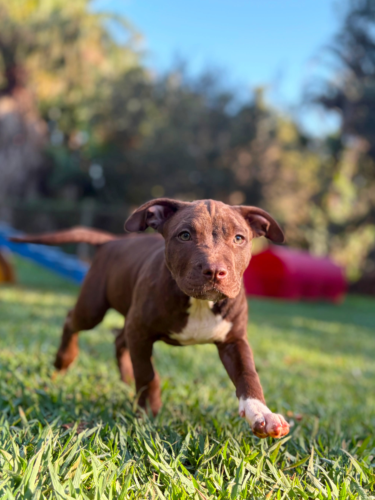
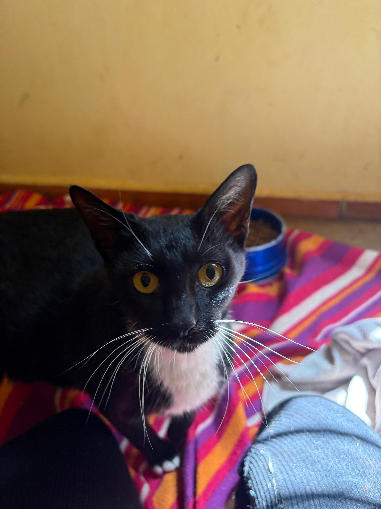
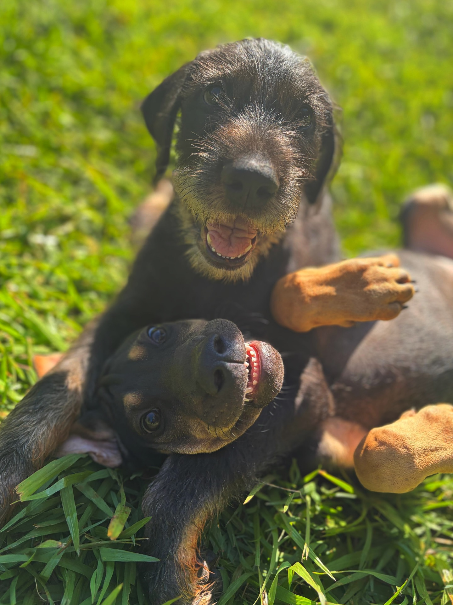
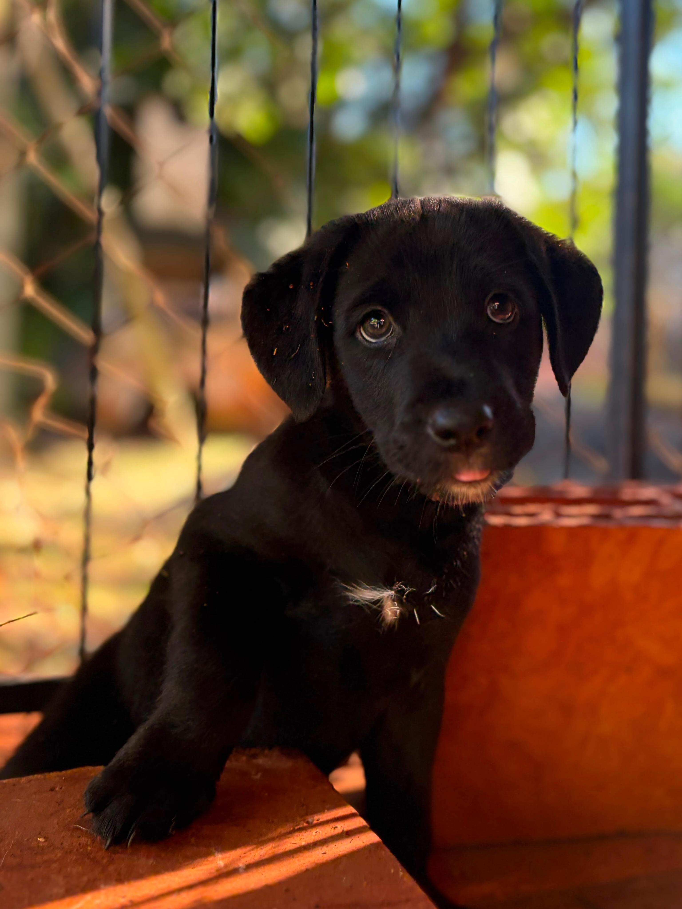
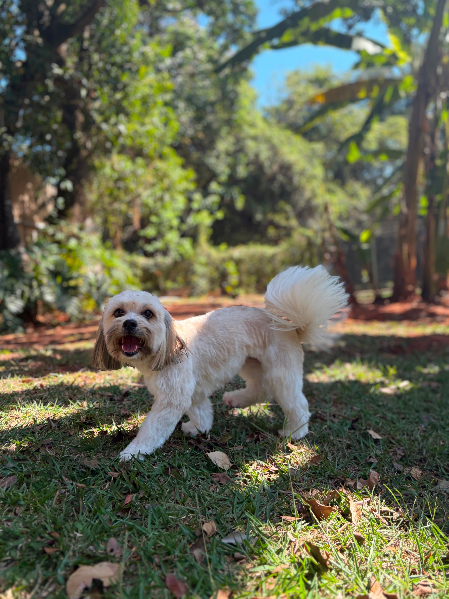
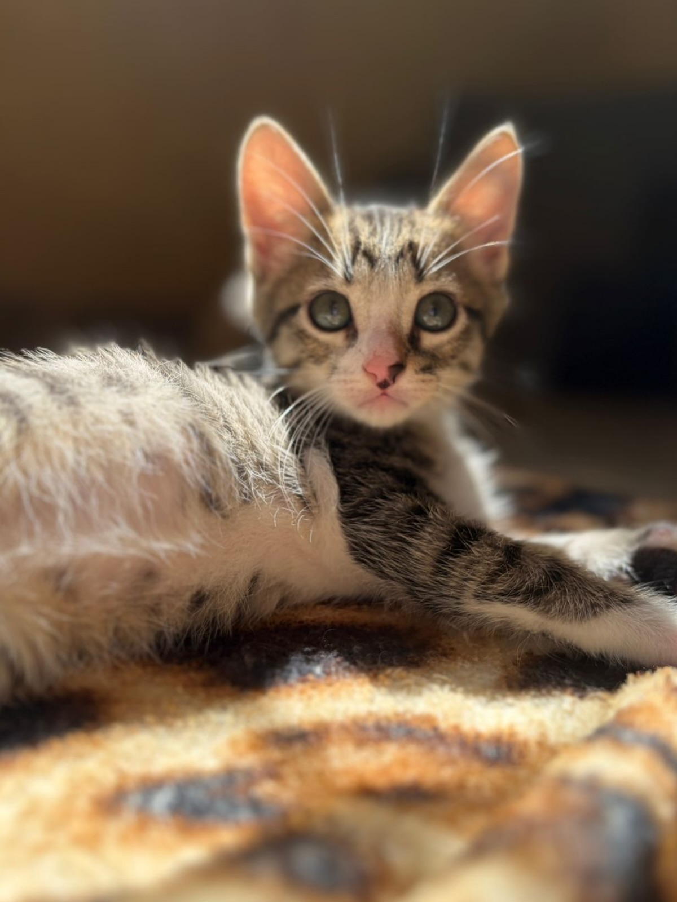
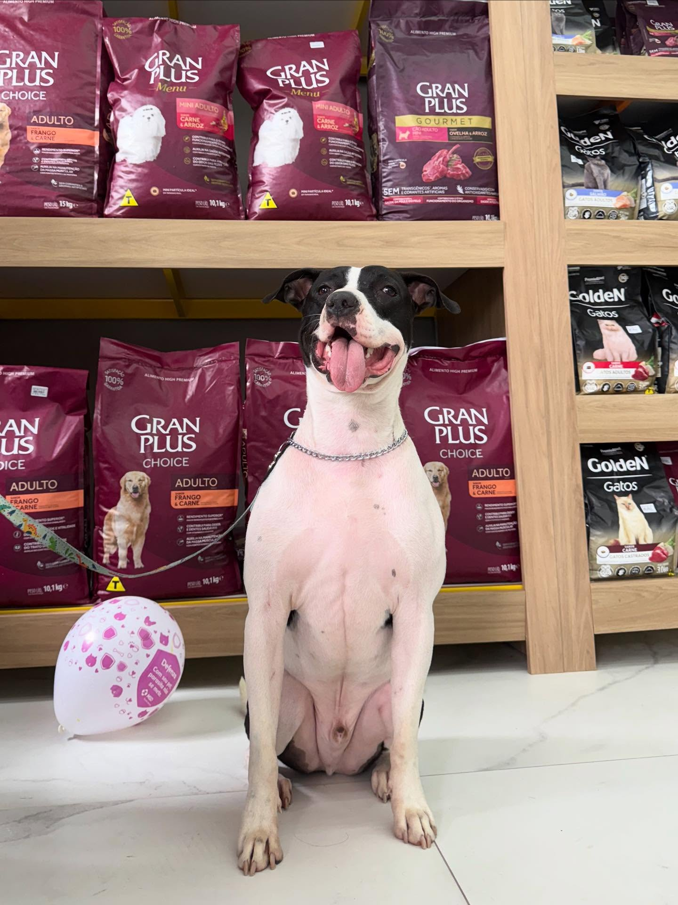
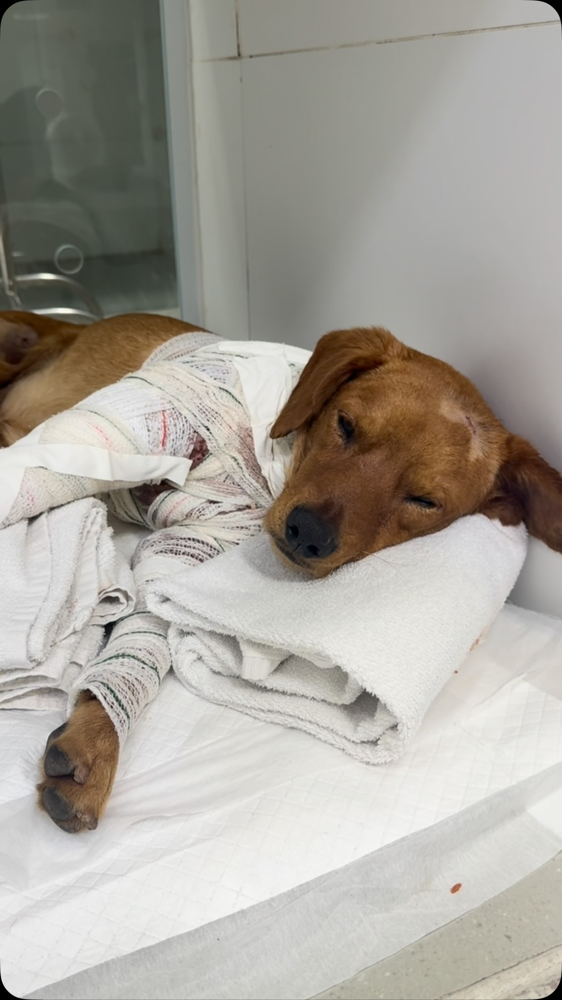

A Associação Anjos de Rua atua incansavelmente no resgate, tratamento e reabilitação de animais em situação de vulnerabilidade.
Quero Ajudar AgoraLocalizada e fundada em Campinas-SP e com o compromisso de combater o abandono e os maus-tratos, a Associação Anjos de Rua dedica-se a dar voz àqueles que não podem falar. Nossa missão é erradicar o sofrimento animal desnecessário, promover a conscientização da comunidade e incentivar a guarda responsável.
Visão: Um mundo no qual os animais vivam livres de sofrimento e onde a relação entre humanos, animais e meio ambiente seja pautada no respeito e na sustentabilidade.
Amor não se compra, ADOTE!


Mobilização diária para atendimento a denúncias de abandono, providenciando atendimento veterinário, exames e medicação.

Preparamos os peludinhos através de lares temporários e cuidados para que encontrem famílias amorosas e definitivas.

Campanhas educativas sobre a importância da castração, vacinação e combate aos maus-tratos na comunidade.
Recuperação física e psicológica de cães e gatos resgatados de situações de vulnerabilidade, proporcionando exames, tratamentos veterinários e dignidade.
Direcionamento rigoroso e consciente de animais reabilitados para lares definitivos e estruturados, combatendo o ciclo de abandono na região.
Sensibilização constante da sociedade sobre a guarda responsável, a importância da castração e o combate implacável aos maus-tratos animais.
Conheça alguns de nossos animais que aguardam um lar e outros em recuperação que chegaram vulneráveis.

Pronto para Adoção

Pronto para Adoção

Cuidados e Recuperação

Cuidados e Recuperação
Atuamos em Campinas/SP e região. Não realizamos doações para outros estados ou cidades a mais de 120km de distância.
Todas as respostas do formulário devem ser verdadeiras. O processo passa por análise especializada e rigorosa para garantir a segurança dos nossos anjinhos. Caso não haja retorno em até 5 dias úteis, significa que o perfil não atende aos critérios da adoção desejada.
O adotante deve ter no mínimo 18 anos completos e apresentar documento de identidade válido com foto e comprovante de residência.
A residência deve ser totalmente telada e segura (sem rotas de fuga), garantindo proteção total para cães e gatos.
Contribuição obrigatória para a manutenção do trabalho da ONG: R$ 180,00 (Dinheiro, PIX ou Bradesco) OU 1 pacote de ração de 15kg (Golden ou Gran Plus).
Disponibilidade para fornecer carinho, assistência veterinária de qualidade e concordar com o acompanhamento pós-adoção da associação.
Veja mais fotos e histórias dos cães e gatos que estão prontos para encontrar uma família cheia de amor.
Preencha nosso questionário online para iniciar o processo de adoção responsável de um peludinho.
Contribua todo mês para custear ração, exames e tratamentos veterinários.